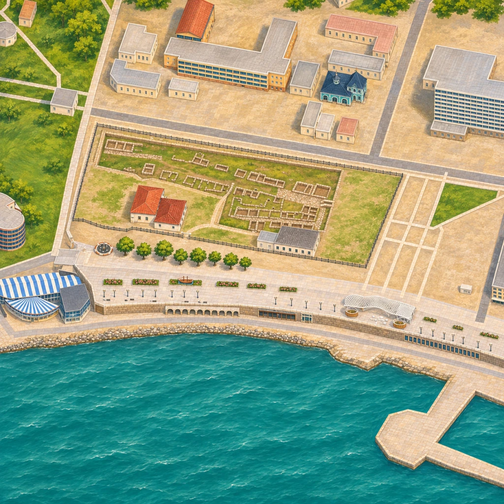
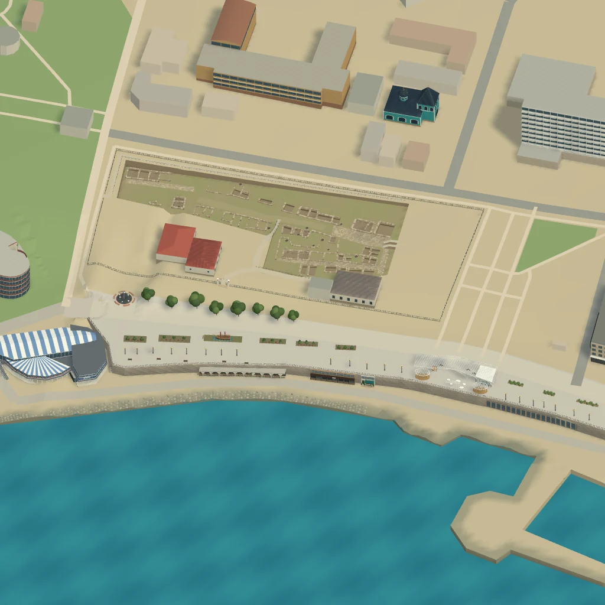

Набережная Анапы в иллюстрации
Пробный участок от Queue до «Парохода». Перетащите границу между кадрами, чтобы сверить берег, здания и раскоп Горгиппии.


На проверенном отрезке берег почти совпал с исходным кадром. Генератор добавил деревья на заднем плане и местами изменил контуры кладки в раскопе. Для прогулки, велосипеда и машины откройте 3D.